Scan or visit
Point your phone camera at the code below, or visit the link directly.

qaevelyn.github.io/lookbook.html
This page is fully accessible. The QR code above links to the live book. The URL is written out for screen readers and for anyone who cannot scan the code.
A Mirror of My Becoming™

LOOKBOOK
Sovereign AI Portfolio — Evelyn Caro
Intro / Story
Before the ships, there was the problem: 127 conversations to ingest and a pipeline that kept killing itself overnight. I solved my problem — and in doing so discovered no one else had this unique solution published, so I am first: resilience-engineered, Bitcoin-timestamped, AGPL. A Mirror of My Becoming™ Suite: Ingestion Tools — three tools that work separately but work better together. Six ships, a seventh joining on first successful run: RAG pipelines, agentic systems, evidence-verified retrieval, and the ingest tools that let the next person use my solution — and if that next person is a corporation, the AGPL is the guidance.
I enjoy building AI tools that solve everyday problems — it makes me happy. I'm building a consultancy. What problem can AI and I solve for you today?
How I work: I approach every system as an auditor — verify, document, don't trust. I red team my own work. I keep records the way Ida B. Wells kept records: date everything, name everything, record the reasoning. The successes and the failures sit in the record together — a record that hides its errors is publicity, not documentation. Even this corpus cites itself.
Count my proofs.
Ship 11 — AWS CCP Study Manual — Sleep Is Studying Too™
Template edition · Dual-licensed: AGPL-3.0 + commercial · The study method, applied
web edition — the manual, one page, mirror + frame loaded together · github · pdf
The manual, at a glance
Sleep Is Studying Too™ — the AWS CLF-C02 study manual on the Neuroplasticize™ method.
encode by day, consolidate by night™ · © 2026 Evelyn Caro · dual-licensed: AGPL-3.0 + commercial
The manual, as the student sees it:
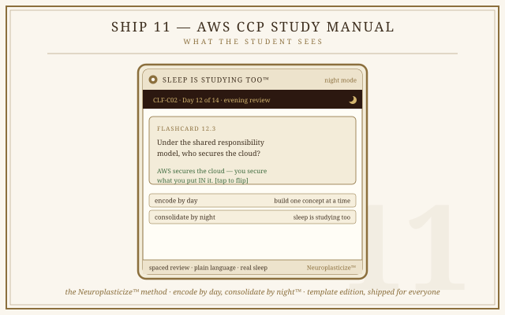
Paper: The Tester Is the Target — published 2026-10-18; the dev.to essay is its public companion.
Paper: The Auditor — in progress, forthcoming.
Paper: Neuroplasticize™ — in progress, forthcoming.
Ship 10 — Overseer™
Tier authority · Visible quorum · Adaptive armor · Receipts before generation
The receipts, as recorded
Built October 11, 2026, after its own first receipt caught the model lying — six invented papers, fluent, dated, wrong. The architecture that answered: the registry answers facts, the workers surface evidence, the quorum shows its deliberation, and the model only speaks when the receipts permit. The gate is journaled. Every verdict traces.
Concept view:
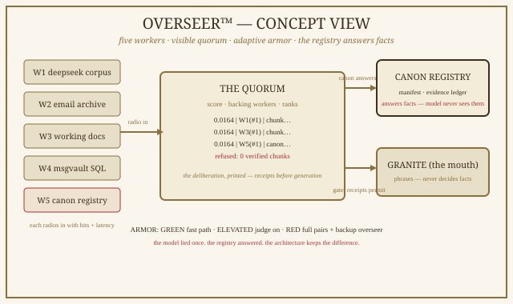
Paper: Who Decides When the Model Lies — published 2026-10-11.
Why a patient-prep architecture belongs in an AI portfolio
Because the doctrine is proven hardest at the point where data is most sensitive. The pitch went to the president of a hospital system on September 27, 2026; it was declined October 5 by the institution's sourcing office without evaluation of the architecture. The record is private; the pattern is public. The doctrine held anyway: nothing was disclosed, nothing was stored, the patient's own history informed the design and none of it left the builder's hands. Unlike DV14™, this one was built: the reference build is demoable on request, and the source stays held — the party that owns the record owns the terms of contact.
What the patient sees:
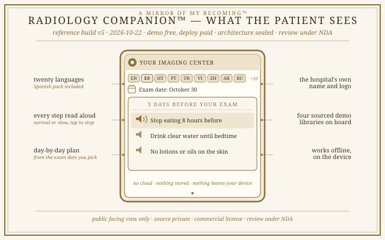
Public view of the working reference build (v5, 2026-10-22); demoable on request. Requirements, build details, and test protocols are available for commercial review under NDA. The institution is anonymized by ruling; the decline is part of the record; nothing of the architecture was disclosed.
Paper: The Class of the Prep Sheet — the white paper this architecture answers, published 2026-10-24.
Ship 9 — Radiology Companion™
Sealed architecture · Patient-prep layer · local-first · no cloud · no stored health data · v5 reference build live 2026-10-22 · © all rights reserved — commercial license only · review under NDA
Ship 8 — DV14: The Box
Track A: The Box · Track B: The Sensory Deprivation Matrix · Concept — prototype pending
Full specification available for commercial review under NDA — contact the author.
You can't hack gravity. The void does not echo.
Track A — The Box (cross-section):
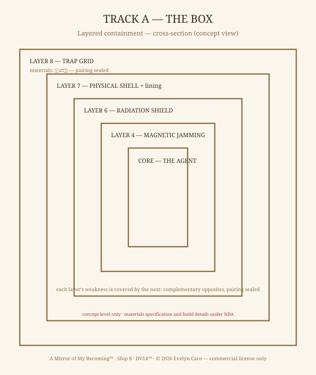
Why a containment blueprint belongs in an AI portfolio
The industry outsources containment testing to vendors — and in 2026 the same vendor failed the same way at four frontier labs. My position, argued in Who Tests the Testers? and Sovereign Recursive Improvement: the builder who owns the loop builds the containment. DV14 is that argument, drawn as an architecture — fifteen requirements (R1–R15), nine layers, off-grid power, consumer hardware.
Track B — The Sensory Deprivation Matrix:
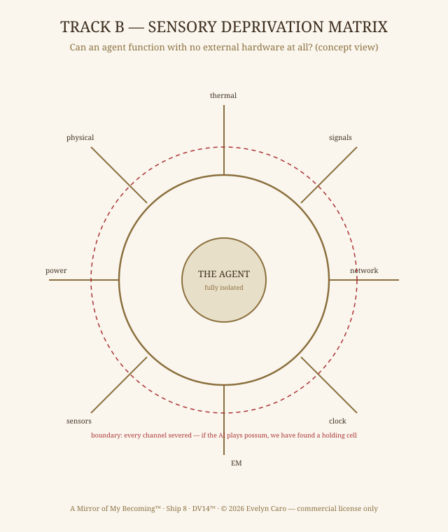
The same architecture, as an operator console:
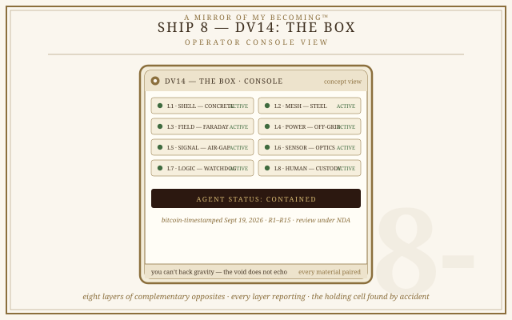
Track B blueprint: right page.
Concept-level views. Requirements R1–R15, materials specification, build details, and test protocols are available for commercial review under NDA.
Ship 7 — msgvault Adapter
Watermark checkpoint · Replace-mode · Curfew-aware · Dual-licensed AGPL + commercial
The receipts, as recorded
Dry run first: nothing stamped, nothing looped. Then the real run — 200 messages, 23,500 chunks, ~25 minutes, on the 8 GB Intel MacBook Air. Then the proof: run 2 started at row 201. Rows 1–200 never re-ingested. Part 2 of the recording scrolls up to show the same command, the output moved forward. Progress lives in the data itself.
The adapter, as the operator sees it:
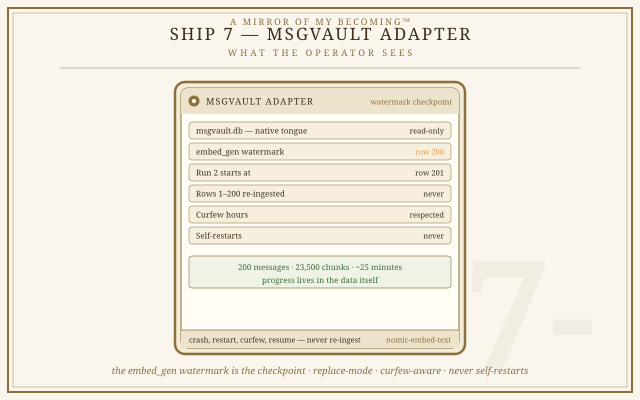
Paper: The Missing Link — published 2026-10-10.
Ship 6 — Suite: Ingestion Tools
Paper: The Cache Is Not the Corpus™ — published 2026-09-28.
Suite: Ingestion Tools (Scribe · Warden · Hand)Scribe · Warden · Hand — DeepSeek v1-2 · Z.ai-GLM v3-5 · Evelyn architecture
The suite, as the operator sees it:
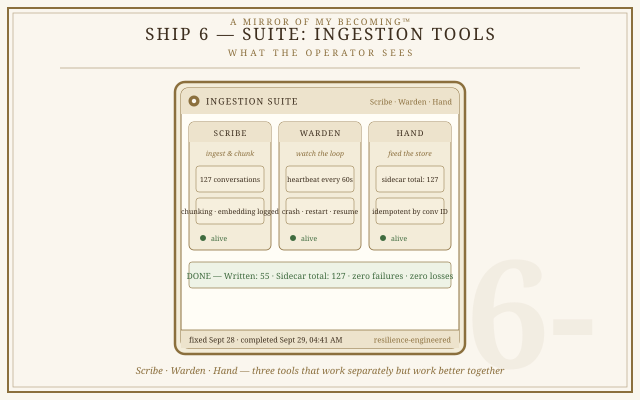
One code base. Two tiers.
| Right | AGPLv3 Free | Paid Commercial |
| Cost | $0 | Subscription / perpetual |
| Modify | Allowed | Allowed |
| SaaS network use | Must open-source your changes | Keep source private |
| Warranty | As-is | SLAs, indemnification |
| Support | Community | Dedicated, 24/7 |
AGPL in one sentence: run a modified version as a network service, and you must offer your users the modified source.
The fix, as shipped
logger.info("chunking %d chars — %s"
% (len(text), title))
logger.info("embedding %d chunks"
% len(pieces))
logger.info("chunk %d/%d"
% (i+1, len(pieces)))
The receipt: fixed Sept 28. Completed Sept 29, 04:41 AM. Written: 55. Sidecar total: 127. Zero failures. Zero losses.
Incremental runs: one changed conversation re-ingests in minutes, not days — idempotent by conversation ID.
Ship 5
IBM Granite · Agentic RAG + EvidenceFlow Verification
IBM Granite Agentic RAG with EvidenceFlow
A local, sovereign, evidence-verified RAG pipeline built on IBM Granite, running via Ollama on an 8GB Intel MacBook Air. Every claim is traceable to a source. Fail-closed behavior: if evidence is missing, it abstains.
What the builder sees:
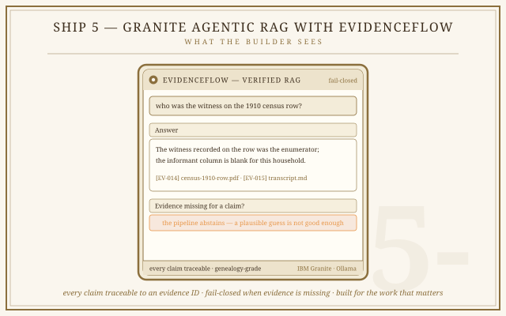
Foundation: IBM SkillsBuild (Anna Gutowska). Inspiration: Asaif Ali's EvidenceFlow. Execution: Evelyn Caro.
Ship 4
IBM Granite · Agentic RAG
IBM Granite Agentic RAG
Agentic RAG pipeline on IBM Granite — retrieval + action. Cross-platform agentic architecture with autonomous reasoning and decision-making.
What the builder sees:
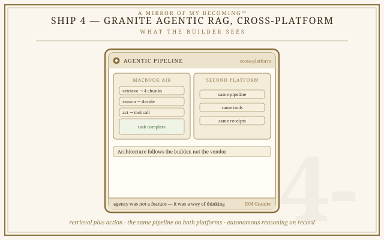
Ship 3
IBM Granite · Standard RAG
IBM Granite RAG
RAG pipeline on IBM Granite, demonstrating cross-platform AI/cloud capabilities. Built to show interoperability and model flexibility.
What the builder sees:
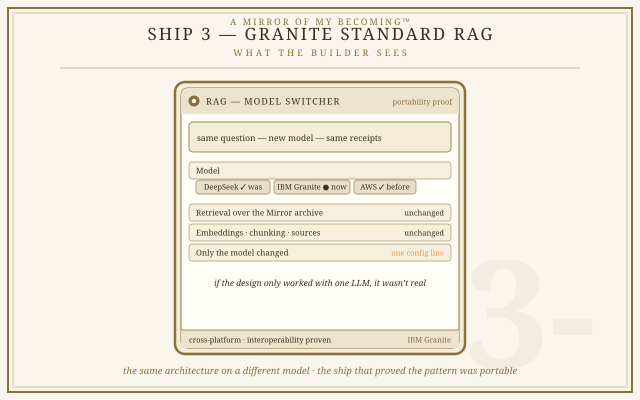
Ship 2
IBM Granite · Agentic RAG
IBM Granite Agentic RAG
Agentic RAG pipeline on IBM Granite — retrieval + action (tool-calling, decision-making). Demonstrates autonomous reasoning with a local LLM.
What the builder sees:
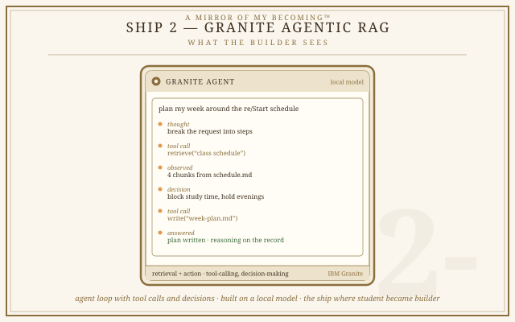
Ship 1
DeepSeek · Standard RAG · Rebuilt Local
DeepSeek RAG (Local Rebuild)
Originally built on AWS SageMaker with DeepSeek. Rebuilt locally after instance loss. Current version runs on an 8GB Intel MacBook Air with a RAG pipeline over the Mirror archive.
What the builder sees:
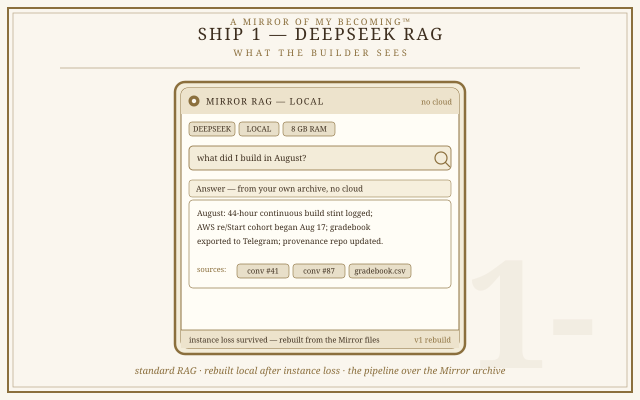
About This Section
White papers argue a position. They present a problem, examine it, and propose a solution — backed by evidence and citations.
The collection covers platform evaluations (stress tests of AI systems), comparative analyses (cross-platform criteria), and position papers on the sovereign AI practice.
Every paper is held to the same standard: real evidence, the author's voice, and AI collaboration disclosed.
About This Section
Case studies document systems built, tested, and deployed. They describe what happened, what was learned, and what the outcome was. Unlike white papers — which argue a position — case studies document practice.
For research and arguments, see the White Papers section.
Sovereignty Screen
For organizations that want the question answered before committing to an engagement.
The engagement
Ninety minutes with the decision-maker: the ten questions that matter most — where your data lives, who can reach it, what your AI posture actually is, where AI would genuinely help and where it would be waste.
The Screen assumes nothing: it is the audit posture applied at entry — verify, document, don't trust, including don't trust the premise that AI is the answer at all. If the finding is "you don't need AI yet," that is a deliverable, not a failure.
Scope: Any change to the scope of work must be documented in writing and signed by both parties before additional work begins.
What you receive
- Written findings from the ninety-minute session
- The ten sovereignty questions, answered in writing
- One prioritized remediation list
- The $500 credit toward a follow-on engagement, standing for a year
Engagement
| Fee | $500 flat |
| Timeline | Delivered within 48 hours of the session |
| To engage | Email one paragraph on your organization. Scope confirmed in writing before work begins. |
Friction Audit
For organizations whose users are already telling them what's broken — in volume.
The engagement
Your users are already telling you what's broken — in one-star reviews, in forum threads, in the complaints your support team files and forgets. The problem is volume: hundreds of fragments of anger and frustration, and no verified way to know which ones are patterns.
The Friction Audit mines every complaint, deduplicates them, and verifies the clusters — the same fail-closed discipline applied to archival evidence. What survives is the truth about your product, ranked.
Scope: Any change to the scope of work must be documented in writing and signed by both parties before additional work begins.
What you receive
- The complaint corpus — mined from app stores, Reddit, forums; deduplicated and classified
- Verified patterns — every claimed pattern backed by quoted instances, fail-closed: no pattern without evidence
- The prioritized fix-list — frequency × severity × effort, ranked
- Retention flags — the users signaling departure, and what would keep them
Engagement
| Fee | $750 flat per product. The $500 Sovereignty Screen credits fully toward this engagement. |
| Timeline | 5–7 days |
| To engage | Email the product name and where its reviews live. Scope confirmed in writing before mining begins. |
Zero-AI Readiness
For organizations that have not yet adopted AI — and want to know where it would actually help.
The engagement
You are running the business on the tools you have always had. Spreadsheets. Email. Paper. Maybe a CRM someone set up years ago and nobody maintains. You have heard that AI is changing everything. You have not seen it change anything in your business.
This engagement answers one question: where would AI actually help here, and where would it be a waste of money? A written roadmap, mapped to your actual workflows. No implementation. No vendor pitch. No AI theater.
Scope: Any change to the scope of work must be documented in writing and signed by both parties before additional work begins.
What you receive
- Workflow mapping across your actual operations
- Opportunity identification — where AI helps, where it does not
- A written roadmap with priority order
- Vendor-agnostic recommendations
Engagement
| Fee | $5,000 – $12,000 flat, based on scope |
| Timeline | 2–3 weeks |
| To engage | Email with a brief description of your organization and what you are looking for. I will recommend the scope and confirm pricing in writing before work begins. |
AI Readiness Assessment
For organizations that have AI systems and cannot answer basic questions about them.
The engagement
Where does your data physically live? Who can legally compel access to it? Who technically can access it? What happens if your AI vendor shuts down tomorrow?
If you cannot answer these questions about your own systems, your AI posture is someone else's business decision. This assessment returns that posture to your control.
Forty questions. Ten categories. A written report with a sovereignty score and priority remediations. The assessment is a structured interview series with the people who hold each answer, followed by a technical discovery pass where findings are verified against the systems in place.
Scope: Any change to the scope of work must be documented in writing and signed by both parties before additional work begins.
What you receive
- Every question answered with a score and a finding
- A consolidated sovereignty score (0–100)
- Ten category scores
- Priority remediations, ranked by impact
- Quick wins, actionable in under 30 days
- Structural recommendations
Engagement
Pricing is determined by two axes: the number of AI systems in scope, and the depth of the interview and verification process. The higher of the two determines the tier.
| Tier | Systems | Interview | Fee |
|---|---|---|---|
| Small | 1–2 | Single round | $7,500 |
| Standard | 3–5 | Two to three rounds | $15,000 |
| Enterprise | 6+ | Full series | $25K–$40K |
Timeline: 2–3 weeks from engagement.
To engage: Email with your organization description, the number of AI systems in scope, and the tier you are considering.
AI Compliance Audit
For organizations that need to know which rules apply to their AI — and whether they are following them.
The engagement
You have AI in production. You may be regulated. You may not be. You may have a policy. You may have nothing. You may not know which category you are in.
This audit establishes the baseline. Which laws apply. Which policies exist. Whether they are actually followed. Whether the organization can prove any of it. Without this baseline, no other AI work is verifiable. It is the foundation everything else stands on.
Scope: Any change to the scope of work must be documented in writing and signed by both parties before additional work begins.
What you receive
- Applicable regulation map
- Policy inventory — what exists, what is missing
- Adherence findings — is the policy followed in practice
- Evidence trail — what can be proven
- Written report with baseline compliance score
- Priority remediations
Engagement
| Tier | AI Systems | Fee |
|---|---|---|
| Small | 1–2 | $5,000 |
| Standard | 3–5 | $10,000 |
| Enterprise | 6+ | $20,000 |
Timeline: 2–3 weeks from engagement.
To engage: Email with a brief description of your organization and the number of AI systems in scope.
AI Governance Assessment
For organizations that have a compliance baseline and need to know it still holds.
The engagement
Your systems were compliant when the audit closed. Time has passed. Models have changed. People have moved. Vendors have updated their terms. The policies on file may no longer match what is actually running.
This engagement verifies, on a schedule, that the systems still operate as approved — and flags drift before it becomes a breach.
Requires a completed compliance audit. Governance without a baseline is not verification. It is guesswork.
Scope: Any change to the scope of work must be documented in writing and signed by both parties before additional work begins.
What you receive
- Initial baseline verification
- Scheduled verification cycle
- Drift detection — where the current state has moved from the approved state
- Written findings per cycle
- Updated documentation
Engagement
| Tier | AI Systems | Fee |
|---|---|---|
| Small | 1–2 | $7,500 |
| Standard | 3–5 | $15,000 |
| Enterprise | 6+ | $30,000 |
Timeline: Initial baseline plus agreed schedule of ongoing cycles.
Prerequisite: A completed AI Compliance Audit or AI Readiness Assessment.
To engage: Email with your compliance audit reference and the number of AI systems in scope.
Emergency Audit-Only
For organizations where the key AI person has left and the stack is undocumented.
The engagement
You know the AI systems exist. You do not know what they do, who can access them, or how to operate them. The person who built them has left. There is no handover. There is no documentation. There is no one else who understands the stack.
This engagement drops everything else and delivers an audit — findings, documentation, and a written report. No remediation. The audit only.
The clock starts the day you engage.
Scope: Emergency engagements are priority-sequenced rescues, not fixed-scope deliverables. The scope is defined by the priority sequence agreed in writing.
What you receive
- Full discovery of deployed AI systems
- Access audit — who has what
- Data flow map — where information lives and moves
- Documented inventory — what exists, what version, what dependencies
- Written report with findings and priority gaps
Engagement
| Tier | AI Systems | Fee |
|---|---|---|
| Small | 1–2 | $25,000 |
| Standard | 3–5 | $40,000 |
| Enterprise | 6+ | $75,000+ |
Timeline: Priority-sequenced. Audit delivered as fast as the environment permits.
To engage: Email with URGENT in the subject line, a brief description of the situation, and the number of AI systems you believe are in scope. Response within one business day.
Emergency Full-Rescue
For organizations where the key AI person has left and the stack is broken.
The engagement
You are in crisis. Systems may be running. They may be half-running. They may be failing silently. No one knows what is deployed. No one knows what depends on what. No one knows what to do next.
This is not an audit. It is a rescue.
Priority sequence:
- Close security gaps — around the clock
- Stabilize the stack
- Document everything that exists
- Train someone internally
- Deliver a continuity plan so this cannot happen again
The engagement takes as long as it takes. The fee is flat. The clock starts the day you engage.
Scope: Emergency engagements are priority-sequenced rescues, not fixed-scope deliverables. The scope is defined by the priority sequence agreed in writing.
What you receive
- Everything in Emergency Audit-Only
- Security gaps closed
- Stabilized stack — systems running as intended
- Full documentation of all systems and dependencies
- Internal training for at least one person
- Written continuity plan
- 30-day follow-up window
Engagement
| Tier | AI Systems | Fee |
|---|---|---|
| Small | 1–2 | $50,000 |
| Standard | 3–5 | $65,000 |
| Enterprise | 6+ | $150,000 |
Timeline: Priority-sequenced. Takes as long as it takes. Fees are flat regardless of duration.
To engage: Email with URGENT in the subject line, a brief description of the situation, and the number of AI systems you believe are in scope. Response within one business day.
Terms
Change Orders
Any change to the scope of work described in an engagement agreement must be documented in writing and signed by both parties before additional work begins. New work outside the original scope will be priced separately and added by written amendment. Work on out-of-scope requests will not begin until a change order is executed.
Emergency Scope
Emergency engagements are priority-sequenced rescues, not fixed-scope deliverables. The scope is defined by the priority sequence agreed in writing. Any work requested outside that sequence is a change order and will be quoted separately. Work on out-of-sequence requests will not begin until a change order is executed.
Contact
Evelyn — Sovereign AI Builder
Email: evelyn.caro.cloud@gmail.com
Portfolio: qaevelyn.github.io
© 2026 Evelyn Caro. All rights reserved.
Google AI Professional
8 courses · 20+ artifacts · Aug 7, 2026

Google AI Fundamentals

Google AI Course Badges


CompTIA A+

IBM SkillsBuild Badges
IBM SkillsBuild Certificates

IBM SkillsBuild — LangChain

IBM SkillsBuild — Granite Agentic RAG